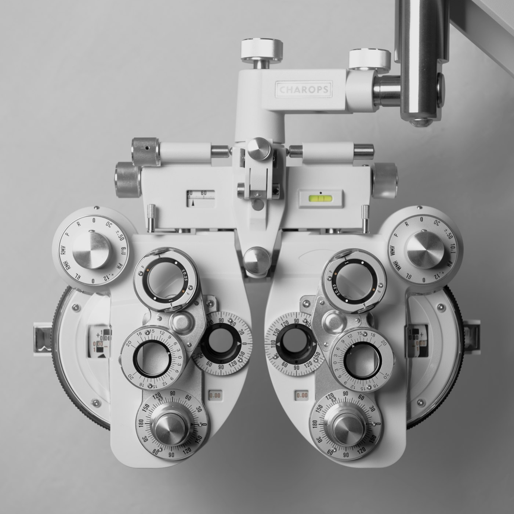

Oftalmologia em Fortaleza com a Dra. Socorro e a Dra. Fernanda Carvalho
Consultas, exames e cirurgias dos olhos, com hora marcada.
Av. 13 de Maio, 1116, sala 501, Ed. Office Bradesco, Fátima
- Córnea A janela transparente na frente do olho. Protege e faz a maior parte do foco da luz.
- Íris A parte colorida. Abre e fecha para controlar quanta luz entra.
- Pupila A abertura no centro da íris, por onde a luz passa.
- Cristalino A lente natural do olho, que ajusta o foco de perto e de longe. Quando fica opaco, é a catarata.
- Corpo ciliar Músculo em anel que muda a forma do cristalino e produz o humor aquoso.
- Humor vítreo Gel transparente que preenche o olho e mantém a forma dele.
- Retina Camada sensível à luz no fundo do olho. Transforma a imagem em sinais para o cérebro.
- Coroide Camada cheia de vasos entre a retina e a esclera. Leva oxigênio e nutrientes à retina.
- Esclera A parte branca. Camada externa firme que protege o olho e dá a forma dele.
- Nervo óptico Leva os sinais da retina até o cérebro. No glaucoma, é ele que sofre o dano.
As médicas
Você marca com a Dra. Socorro ou com a Dra. Fernanda e é atendido no mesmo endereço, com os mesmos equipamentos. Se precisar voltar, seu histórico está lá.
- Dra. Socorro Carvalho Médica oftalmologista · CRM-CE 5690 · RQE 2524
- Dra. Fernanda Carvalho Médica oftalmologista
O que examinamos na consulta
-
Consulta oftalmológica
Medida da acuidade visual, exame dos olhos na lâmpada de fenda e conversa sobre o que mudou desde a última visita.
-
Exame de refração
Medimos o grau para óculos e lentes de contato. A receita sai na mesma consulta.
-
Pressão intraocular
A tonometria mede a pressão dentro do olho, principal sinal de alerta para o glaucoma. É rápida e não dói.
-
Fundo de olho
Com a pupila dilatada, examinamos retina e nervo óptico. Indicado com frequência para quem tem diabetes ou pressão alta.
-
Avaliação de catarata
Acompanhamos a opacidade do cristalino e orientamos sobre o momento da cirurgia, quando ela for indicada.

Como é a sua consulta
-
Agende pelo WhatsApp ou telefone
Mande mensagem para (85) 98923-1793 ou ligue para (85) 3257-1793. Diga se é a primeira consulta e se vai usar convênio.
-
Traga o que você usa
Óculos atuais, lentes de contato, receitas antigas e a lista de colírios e remédios em uso.
-
Reserve a tarde, se houver dilatação
Com a pupila dilatada, a visão fica embaçada e sensível à luz por algumas horas. Venha com acompanhante e não dirija na volta.
-
Saia sabendo o próximo passo
Receita de óculos, pedido de exames ou plano de acompanhamento, explicado antes de você ir embora.
A Dra. Socorro no Instagram
Avisos do consultório, campanhas de saúde ocular e os congressos de que ela participa, como o Congresso Brasileiro de Oftalmologia de 2023, aqui em Fortaleza.
Seguir @drasocorrocarvalhoMarque sua consulta
(85) 3257-1793Av. 13 de Maio, 1116, sala 501
Ed. Office Bradesco, Fátima, Fortaleza (CE)
Ver no Google Maps
WhatsApp: (85) 98923-1793
Horários de atendimento, convênios aceitos e valor da consulta particular: confirme na mensagem ou na ligação.
Perguntas antes de marcar
Com que frequência devo examinar os olhos?
Adultos sem queixas costumam voltar a cada um ou dois anos. A partir dos 40, e para quem tem diabetes, pressão alta ou glaucoma na família, o comum é uma vez por ano, ou conforme a médica orientar.
A dilatação da pupila é sempre feita?
Não. Ela serve para examinar a retina em detalhe e é feita quando a médica indica. O efeito dura algumas horas.
Uso lente de contato. O que levo?
Venha de óculos ou traga o estojo das lentes, e leve a receita das lentes que usa hoje. Algumas medidas são feitas sem elas.
Crianças também precisam de exame?
Sim. A volta às aulas é um bom momento: grau não corrigido atrapalha a leitura e a criança nem sempre reclama. Na marcação, informe a idade da criança.
Vocês atendem convênio?
Mande mensagem para (85) 98923-1793 ou ligue para (85) 3257-1793 para saber quais convênios são aceitos e o valor da consulta particular.